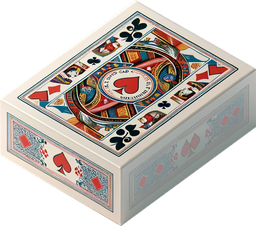

Les 52 cartes sont distribuées. Celui qui a le 7 de cœur le pose et prend la boîte.
Chacun son tour, on pose un 7 pour ouvrir une sorte, ou une carte qui suit le bout d'une sorte déjà sur la table (de l'as au roi).
Si tu peux jouer, tu dois jouer. Si tu ne peux pas, tu prends la boîte.
La manche finit quand quelqu'un n'a plus de cartes. Les autres comptent les cartes qui leur restent (as = 15, figures = 10, les autres leur valeur). La boîte vaut 20 points.
La partie finit quand quelqu'un atteint le maximum de points. Le plus petit pointage gagne.
Des variantes sont offertes avant la partie : valeur de la boîte et de l'as, points retirés à celui qui finit la manche.